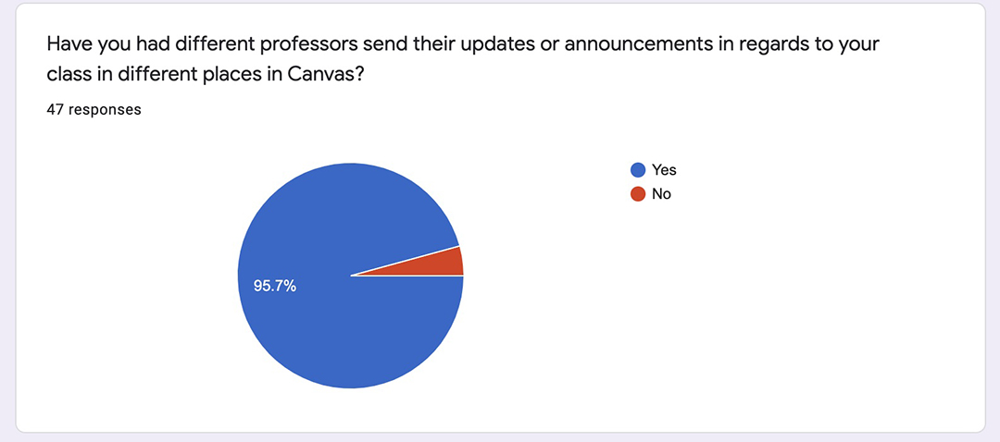
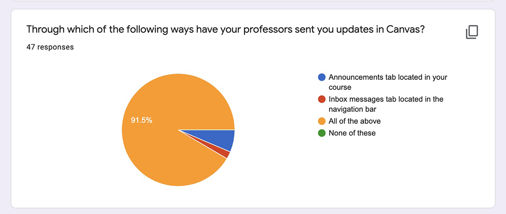
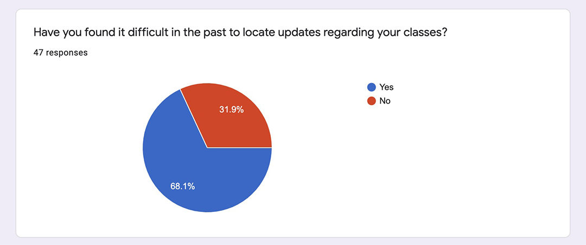
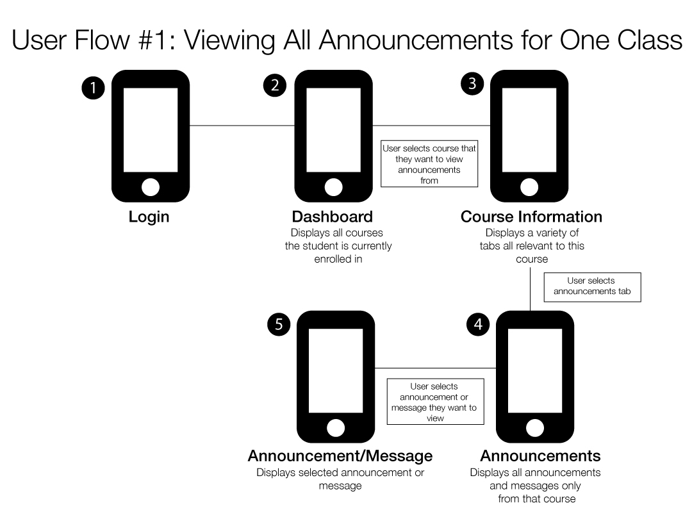
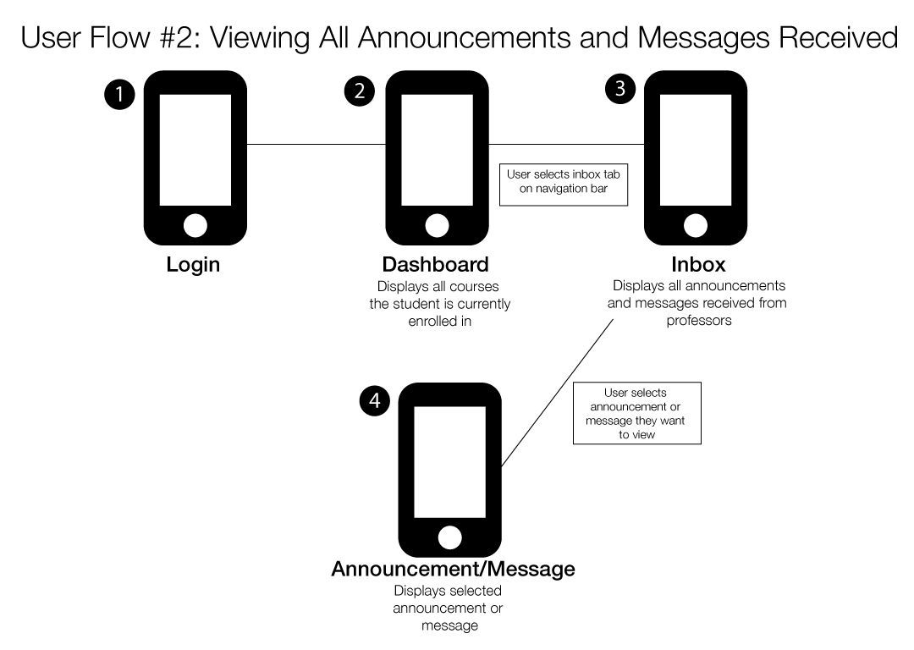
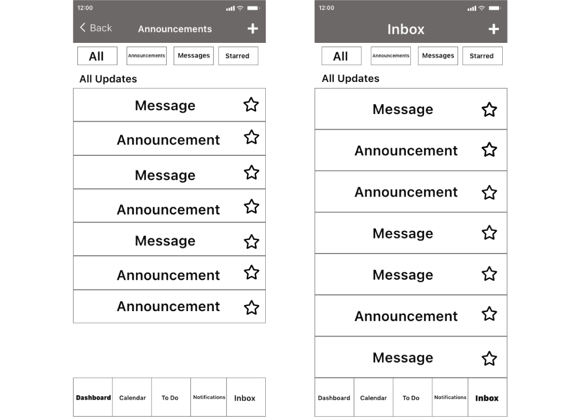

Redesigning the Announcements and Inbox Messages Tabs in the Canvas App
By Rita Yoham
Updated on January 31, 2021
Introduction
Canvas is a popularly used app among colleges and universities as well as high schools that organizes all courses students are taking into one central hub for accessibility to assignments, syllabi, and other course materials. It is important to note that any student enrolled at a school that uses Canvas is most likely required to use the app, making the usability of this app crucial for student success. In addition to the requirement of students to use this application, it has become even more used than before with the COVID-19 pandemic and a larger majority of courses taken place online than before. This creates an increased reliance on Canvas and on the usability of the application.
Defining Users and Goals
The users of the Canvas app are primarily currently enrolled students of which their school uses Canvas for online learning to supplement in person classes or as a tool for courses solely online. For this group of users, I decided to focus on college students due to a lack of resources.
Some goals of the users include the following:
- Access materials for both online and in person courses
- Receiving updates from their professors through announcements or inbox messages
- Completing and uploading assignments
- Taking quizzes and exams
- Watching lectures and accessing readings
- Accessing syllabi
- Accessing any other additional materials needed for their classes
Application Analysis
Canvas is a very flexible app in terms of being customizable for teachers and professors and allows them to build the classroom that they want. However, one of the downfalls in this for students are the announcements and messages that are separated and located in completely different parts of the application. This can cause miscommunications between professors and students and can cause further problems for students in their classes. This is because each professor handles their courses through Canvas differently, including some professors utilizing only the announcements tab for any updates, only the messages tab for any updates, or using both. Some even use email as a way of updating their students on their courses, making updates scattered throughout the Canvas platform and throughout other platforms, such as email.
The current announcement tab within a course navigation.
The current inbox messages tab navigation.
User Research
The participants in this study were 47 enrolled college students at James Madison University. They were contacted through messaging on social media in order to fill out a Google survey to help with this case study.
Out of the 47 students, 95.7% or 45 of them stated that their professors have sent announcements in differing places in Canvas.

Additionally, out of the 47 responses, 91.5% or 43 of the students said they have had professors send their updates through both the announcements tab and the messages inbox.

On top of that, 68.1% or 32 students stated that in the past they have had difficulty locating updates from their professors in the past.

Design Problem Statement
Pain Point #1: Separation of Announcements and Messages
As backed up by my user research, it seems the main problem that users have with locating update regarding their courses is the separation of inbox messages and announcements tabs in the app. This problem is further emphasized when multiple professors will utilize both or only one of these tabs, as backed up by the 95.7% of students who said that they have seen this.
Pain Point #2: Announcements through Email
Another pain point that I gathered from my research is that another way that professors will send out announcements is simply by just emailing their students. When I asked why it was difficult to find certain updates or announcements, 4 students mentioned that sometimes professors will send out their announcements through email. When they do this, students cannot refer back to the announcement through Canvas neither in the announcements tab nor the inbox messages. This further makes it difficult to locate or refer back to important announcements in the course.
The Design Problem
Unfortunately with pain point two, since those announcements are done through another application, your email app, there is not much that can be done to fix that while fixing the Canvas app. However, as demonstrated by the difference in categorization of messages and announcements, students can struggle to find new and old updates in regards to their courses. The main problem is the error in hierarchy and organization of the features as well as repetition of those features. There is so much flexibility given to professors that students may suffer when receiving updates and they have, with 68.1% of students surveyed saying they have in the past.
All this leads us to the design question:
How might we improve the experience of students using the announcements and/or inbox messages features in the Canvas app?
The Redesign
During the user research process, I decided to ask students how they would change the announcements and inbox messages tabs in order to better serve their needs. I received very mixed responses to this question and also had a few mention that they like the way it is set up currently. However, after taking these thoughts into consideration, I believe I have found a solution that will benefit everyone, even the students who like the way it is currently and the professors as well.
The Design Solution
In order to solve this design problem, I think that the inbox messages should include any announcements sent through the announcements tab. That would make the inbox messages tab a compilation of any and all updates sent by professors, no matter the course. However, if someone wanted to see updates from just one particular professor or course, they can access the announcements tab in the individual course located in the dashboard, and see all updates sent from only that professor and course in that tab, whether it was sent through inbox messages or the announcements tab.
User Flows
I created these user flows in order to simplify and think about how the user will interact with my redesign. I created two to show the two different ways students can find their announcements in the Canvas app.
 Wireframes
After establishing the flow of the new design, I came to an understanding of which pages in the Canvas app are the ones that need to be updated and changed. I decided to create a wireframe to create the skeleton and basic layout of the design for the new pages.
Mockups
Finally, I added all the changes to a final mockup of what the announcements tab and inbox messages tab will look like with the redesign added.

The Changes
After considering the feedback I received from the user research, I felt the best way to solve this problem while also appealing to those who like the app the way it is, was to make announcements and messages available in both tabs. When you go to the inbox messages tab now, you can view all announcements and messages from all classes and professors. You can also go to the bar at the top and select whether you just want to see announcements or individual messages. I also added a star feature where you can star the messages you find most important or want to refer back to and easily locate them without scrolling through the many messages the user may receive. In regards to the announcements tab, I also allowed both announcements and messages to be viewed in this tab. The only difference however, is that when you view announcements tab, you can only see the announcements and messages that are from that particular course. This simplifies things in terms of the class so if the user is looking for messages only from a particular professor or class, they can look in the announcements tab.
The flow and how to get to these tabs are relatively the same as before as there were no problems with locating these pages and the main pain point was different messages and announcements located in different sections of the application, making them hard to find.
Conclusion
It's funny how something so small in an app can cause 68.1% of those surveyed problems when locating important announcements for their classes. In the future, I hope to test out my solution among others to see if it is effective and helps those students use the app better. This project helped me further build my UX and UI skills greatly and really helped me cumulate all the skills I have learned in my past courses. I was able to appreciate and understand the intense amount of work that goes into redesigning even the smallest aspects of websites and apps.